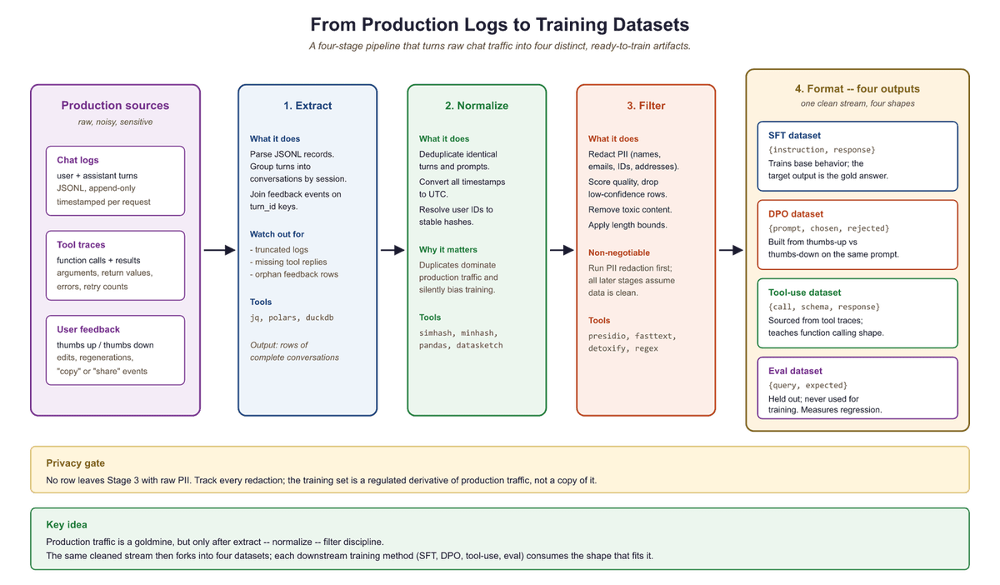

"Your model is only as good as the data you feed it. The hard part is not generating data; it is converting the chaos of production logs into something a model can learn from."
Synth, Log-Wrangling AI Agent
Enterprise data is a goldmine that most teams leave buried. Every production LLM system generates logs: user queries, model responses, latency traces, tool invocations, and feedback signals. These raw artifacts contain exactly the signal needed for fine-tuning, evaluation, and preference alignment, but only if you can transform them into properly formatted, validated, and balanced datasets. This section covers the end-to-end pipeline: extracting training examples from production traces, converting raw transcripts into structured formats, constructing preference pairs, designing tool-use datasets, enforcing data contracts, filtering for quality, and mixing datasets for optimal training outcomes.
Prerequisites
This section builds on synthetic data principles from Section 14.1: Principles of Synthetic Data Generation, alignment techniques from Chapter 17: Alignment, RLHF, and DPO, and LLM API concepts from Section 11.1: API Landscape and Architecture.
13.6.1 Log-to-Dataset Pipelines
Production LLM systems generate an enormous volume of structured and semi-structured logs. A typical chatbot serving 10,000 daily users produces between 50,000 and 200,000 conversation turns per day, each containing a user query, system prompt, model response, latency measurement, and (occasionally) an explicit feedback signal. The challenge is not volume; it is extracting clean, representative training examples from noisy, privacy-sensitive, and often poorly formatted production data.
The log-to-dataset pipeline has four stages: extraction, normalization, filtering, and formatting. Each stage introduces potential failure modes that compound downstream. A malformed timestamp in extraction causes deduplication failures in filtering, which produces training data with repeated examples that bias the model toward common queries.
Before building any log-to-dataset pipeline, instrument your production system to log the full conversation context (system prompt, user turns, assistant turns, tool calls) in a structured format from day one. Retrofitting structured logging into an existing system is painful. Teams that start with good logging infrastructure can begin fine-tuning within weeks; teams that do not often spend months just getting their data into a usable format.
Think of dataset engineering as an oil refinery. Crude oil (raw production logs) enters one end, and refined products (instruction datasets, preference pairs, evaluation sets) come out the other. Each processing stage removes impurities and separates the crude into useful fractions. Skip a stage and you get contaminated fuel that damages the engine. The analogy extends further: just as different engines need different fuel grades, different training objectives need different dataset formats. SFT needs instruction/response pairs. DPO needs preference triplets. Tool-use fine-tuning needs structured call/response schemas.

import json
from dataclasses import dataclass, field
from datetime import datetime
from pathlib import Path
@dataclass
class ConversationTurn:
"""A single turn extracted from production logs."""
conversation_id: str
turn_index: int
user_message: str
assistant_message: str
model: str
latency_ms: float
timestamp: datetime
feedback: str | None = None # "thumbs_up", "thumbs_down", or None
tool_calls: list[dict] = field(default_factory=list)
def extract_turns_from_jsonl(log_path: Path) -> list[ConversationTurn]:
"""Parse production JSONL logs into structured conversation turns."""
turns = []
with open(log_path) as f:
for line_num, line in enumerate(f, 1):
try:
record = json.loads(line)
# Skip health checks, system events, incomplete exchanges
if record.get("event_type") != "completion":
continue
if not record.get("response", {}).get("content"):
continue
turn = ConversationTurn(
conversation_id=record["conversation_id"],
turn_index=record.get("turn_index", 0),
user_message=record["request"]["messages"][-1]["content"],
assistant_message=record["response"]["content"],
model=record["request"]["model"],
latency_ms=record.get("latency_ms", 0.0),
timestamp=datetime.fromisoformat(record["timestamp"]),
feedback=record.get("feedback", {}).get("signal"),
tool_calls=record.get("response", {}).get("tool_calls", []),
)
turns.append(turn)
except (KeyError, json.JSONDecodeError) as e:
print(f"Skipping malformed record at line {line_num}: {e}")
return turns
# Usage: extract from a day's logs
turns = extract_turns_from_jsonl(Path("logs/2025-03-15.jsonl"))
print(f"Extracted {len(turns)} turns from production logs")
13.6.2 Conversation Formatting
Raw production transcripts rarely match the format expected by training frameworks. A user conversation might span 15 turns, include system messages that should not appear in training data, contain PII that must be redacted, and follow a chat template that differs from your target model's expected format. Conversation formatting converts these raw transcripts into the specific structure your training pipeline requires.
The two most common target formats are single-turn instruction/response pairs (for SFT on individual exchanges) and multi-turn chat templates (for training conversational models). Each format has distinct requirements for how system prompts, tool outputs, and multi-turn context are handled.
import re
from typing import Literal
def redact_pii(text: str) -> str:
"""Remove emails, phone numbers, and common PII patterns."""
text = re.sub(r'\b[\w.+-]+@[\w-]+\.[\w.]+\b', '[EMAIL]', text)
text = re.sub(r'\b\d{3}[-.]?\d{3}[-.]?\d{4}\b', '[PHONE]', text)
text = re.sub(r'\b\d{3}-\d{2}-\d{4}\b', '[SSN]', text)
return text
def turns_to_instruction_pairs(
turns: list[ConversationTurn],
include_system_prompt: bool = False,
max_context_turns: int = 3,
) -> list[dict]:
"""Convert conversation turns into instruction/response training pairs.
Each pair includes up to max_context_turns of prior conversation
as context, formatted as a single instruction string.
"""
pairs = []
# Group turns by conversation
convos: dict[str, list[ConversationTurn]] = {}
for turn in turns:
convos.setdefault(turn.conversation_id, []).append(turn)
for conv_id, conv_turns in convos.items():
conv_turns.sort(key=lambda t: t.turn_index)
for i, turn in enumerate(conv_turns):
# Build context from previous turns
context_start = max(0, i - max_context_turns)
context_lines = []
for prev in conv_turns[context_start:i]:
context_lines.append(f"User: {redact_pii(prev.user_message)}")
context_lines.append(f"Assistant: {redact_pii(prev.assistant_message)}")
instruction = redact_pii(turn.user_message)
if context_lines:
context_block = "\n".join(context_lines)
instruction = f"Previous conversation:\n{context_block}\n\nCurrent request: {instruction}"
pairs.append({
"instruction": instruction,
"response": redact_pii(turn.assistant_message),
"source": "production_logs",
"conversation_id": conv_id,
"turn_index": i,
})
return pairs
def turns_to_chatml(
turns: list[ConversationTurn],
system_prompt: str = "You are a helpful assistant.",
) -> list[dict]:
"""Convert turns into ChatML multi-turn format for chat fine-tuning."""
convos: dict[str, list[ConversationTurn]] = {}
for turn in turns:
convos.setdefault(turn.conversation_id, []).append(turn)
datasets = []
for conv_id, conv_turns in convos.items():
conv_turns.sort(key=lambda t: t.turn_index)
messages = [{"role": "system", "content": system_prompt}]
for turn in conv_turns:
messages.append({"role": "user", "content": redact_pii(turn.user_message)})
messages.append({"role": "assistant", "content": redact_pii(turn.assistant_message)})
datasets.append({"messages": messages, "conversation_id": conv_id})
return datasets
13.6.3 Preference Data Construction
Direct Preference Optimization (DPO) and related algorithms require datasets of pairwise comparisons: for a given prompt, which of two responses does the human prefer? Production systems generate this signal through several channels: explicit thumbs up/down feedback, response regeneration (the user asked for a redo, implying the first response was inadequate), A/B test results, and manual annotation by quality reviewers. The challenge is converting these sparse, noisy signals into clean preference pairs with sufficient volume for training.
A common pitfall is treating thumbs-down as a universal rejection signal. In practice, users click thumbs-down for many reasons: the response was factually wrong, it was too long, it used the wrong tone, or the user simply misclicked. Without understanding why a response was rejected, preference pairs can teach the model contradictory lessons. The best practice is to combine feedback signals with heuristic quality scores to produce preference pairs where the chosen and rejected responses differ along a clear quality dimension.
from dataclasses import dataclass
@dataclass
class PreferencePair:
prompt: str
chosen: str
rejected: str
source: str # "feedback", "regeneration", "quality_score"
margin: float # confidence in the preference ordering
def build_preference_pairs_from_feedback(
turns: list[ConversationTurn],
) -> list[PreferencePair]:
"""Create DPO pairs from thumbs up/down feedback signals.
Strategy: for each thumbs_down response, find a thumbs_up response
to a semantically similar prompt. Fall back to quality scoring
when direct feedback pairs are unavailable.
"""
thumbs_up = [t for t in turns if t.feedback == "thumbs_up"]
thumbs_down = [t for t in turns if t.feedback == "thumbs_down"]
pairs = []
for rejected_turn in thumbs_down:
# Find best matching positive example (simplified: same conversation)
candidates = [
t for t in thumbs_up
if t.conversation_id != rejected_turn.conversation_id
]
if not candidates:
continue
# In production, use embedding similarity to match prompts
# Here we use the first candidate as a simplified example
chosen_turn = candidates[0]
pairs.append(PreferencePair(
prompt=redact_pii(rejected_turn.user_message),
chosen=redact_pii(chosen_turn.assistant_message),
rejected=redact_pii(rejected_turn.assistant_message),
source="feedback",
margin=1.0,
))
return pairs
def build_preference_pairs_from_regeneration(
turns: list[ConversationTurn],
) -> list[PreferencePair]:
"""Create DPO pairs from regenerated responses.
When a user regenerates a response, the original is 'rejected'
and the regeneration is 'chosen' (the user continued the conversation
with the regenerated version).
"""
convos: dict[str, list[ConversationTurn]] = {}
for turn in turns:
convos.setdefault(turn.conversation_id, []).append(turn)
pairs = []
for conv_turns in convos.values():
conv_turns.sort(key=lambda t: t.timestamp)
for i in range(1, len(conv_turns)):
prev, curr = conv_turns[i - 1], conv_turns[i]
# Detect regeneration: same user message, different response
if (prev.user_message == curr.user_message
and prev.assistant_message != curr.assistant_message):
pairs.append(PreferencePair(
prompt=redact_pii(prev.user_message),
chosen=redact_pii(curr.assistant_message),
rejected=redact_pii(prev.assistant_message),
source="regeneration",
margin=0.7, # weaker signal than explicit feedback
))
return pairs
Three common mistakes undermine preference dataset quality. First, position bias: if chosen responses are always generated by a stronger model and rejected by a weaker one, the preference signal may reflect model capability rather than response quality for the specific prompt. Second, length bias: longer responses often receive higher ratings regardless of content quality, so include length-controlled pairs where the shorter response is preferred. Third, temporal contamination: user expectations shift over time as they learn what the model can do, so preference data from month one may not reflect the quality standards of month six.
13.6.4 Tool-Use Dataset Design
Fine-tuning models for tool calling requires datasets that capture the full lifecycle of a tool interaction: the user intent, the model's decision to invoke a tool, the structured tool call, the tool's response, and the model's synthesis of the tool output into a final answer. Unlike standard instruction/response pairs, tool-use datasets must encode function schemas, argument validation, error handling, and multi-step tool chains.
The most effective approach extracts tool-use examples from production traces where the model successfully completed a task using tools. These examples capture real argument patterns, realistic error conditions, and natural user intents that synthetic generation often misses.
def extract_tool_use_examples(
turns: list[ConversationTurn],
tool_schemas: dict[str, dict],
) -> list[dict]:
"""Build tool-use fine-tuning examples from production tool call logs.
Each example includes the user query, available tool definitions,
the model's tool call(s), tool response(s), and final answer.
"""
examples = []
for turn in turns:
if not turn.tool_calls:
continue
# Validate tool calls against known schemas
valid_calls = []
for call in turn.tool_calls:
fn_name = call.get("function", {}).get("name", "")
if fn_name in tool_schemas:
valid_calls.append(call)
if not valid_calls:
continue
# Build the training example in OpenAI function-calling format
example = {
"messages": [
{
"role": "user",
"content": redact_pii(turn.user_message),
},
{
"role": "assistant",
"content": None,
"tool_calls": [
{
"id": call.get("id", f"call_{i}"),
"type": "function",
"function": {
"name": call["function"]["name"],
"arguments": json.dumps(call["function"]["arguments"]),
},
}
for i, call in enumerate(valid_calls)
],
},
],
"tools": [
{"type": "function", "function": tool_schemas[c["function"]["name"]]}
for c in valid_calls
],
}
# Add tool responses if available
for call in valid_calls:
if "response" in call:
example["messages"].append({
"role": "tool",
"tool_call_id": call.get("id", "call_0"),
"content": json.dumps(call["response"]),
})
# Add final assistant response
if turn.assistant_message:
example["messages"].append({
"role": "assistant",
"content": redact_pii(turn.assistant_message),
})
examples.append(example)
return examples13.6.5 Data Contracts and Schema Design
A data contract is a formal specification of what a dataset must contain, how it is structured, and what quality criteria it must meet before entering a training pipeline. Without data contracts, dataset engineering devolves into ad hoc scripting where every team member makes slightly different formatting decisions, validation rules drift over time, and breaking changes propagate silently into model training.
The contract should specify the schema (field names, types, constraints), validation rules (minimum/maximum lengths, required fields, format patterns), versioning policy (how schema changes are tracked), and quality thresholds (minimum examples per category, maximum duplication rate, required feedback coverage).
from pydantic import BaseModel, Field, field_validator
from enum import Enum
class DatasetFormat(str, Enum):
INSTRUCTION = "instruction"
CHATML = "chatml"
DPO = "dpo"
TOOL_USE = "tool_use"
class InstructionExample(BaseModel):
"""Schema for a single instruction fine-tuning example."""
instruction: str = Field(min_length=10, max_length=4096)
response: str = Field(min_length=10, max_length=8192)
source: str = Field(pattern=r"^(production_logs|synthetic|human_annotated)$")
category: str | None = None
difficulty: int = Field(default=1, ge=1, le=5)
@field_validator("instruction")
@classmethod
def instruction_not_empty_after_strip(cls, v: str) -> str:
if not v.strip():
raise ValueError("Instruction must contain non-whitespace content")
return v.strip()
@field_validator("response")
@classmethod
def response_not_boilerplate(cls, v: str) -> str:
boilerplate = ["I cannot help with that", "As an AI language model"]
for phrase in boilerplate:
if v.strip().startswith(phrase):
raise ValueError(f"Response appears to be boilerplate: starts with '{phrase}'")
return v
class DPOExample(BaseModel):
"""Schema for a DPO preference pair."""
prompt: str = Field(min_length=10, max_length=4096)
chosen: str = Field(min_length=10, max_length=8192)
rejected: str = Field(min_length=10, max_length=8192)
margin: float = Field(ge=0.0, le=2.0)
@field_validator("rejected")
@classmethod
def chosen_and_rejected_differ(cls, v: str, info) -> str:
if "chosen" in info.data and v.strip() == info.data["chosen"].strip():
raise ValueError("Chosen and rejected responses must differ")
return v
class DatasetManifest(BaseModel):
"""Top-level manifest validating an entire dataset release."""
version: str = Field(pattern=r"^\d+\.\d+\.\d+$")
format: DatasetFormat
num_examples: int = Field(ge=100)
created_at: datetime
sources: list[str]
quality_metrics: dict[str, float] # e.g. {"dedup_rate": 0.02, "avg_length": 342}Data contracts should be versioned alongside your code using semantic versioning. A field rename is a breaking change (major version bump). Adding an optional field is a minor change. Tightening a validation rule is a patch. Store contracts in your repository and validate every dataset against the contract in CI before it can be used for training. This prevents the silent data quality regressions that are notoriously difficult to debug after a model has already been trained.
13.6.6 Quality Filtering
Raw datasets extracted from production logs contain noise at every level: duplicate entries from retry logic, toxic content from adversarial users, trivially easy examples that waste training compute, and excessively long responses that skew length distributions. Quality filtering removes these problems through a multi-stage pipeline that applies deduplication, toxicity detection, difficulty calibration, and length balancing in sequence.
The order of operations matters. Deduplication should come first because it reduces the volume of data that downstream filters must process. Toxicity filtering comes second because toxic examples should never enter the difficulty calibration stage where they might be scored as "hard" and preserved. Length balancing comes last because earlier stages may shift the length distribution.
import hashlib
from collections import Counter
class QualityFilter:
"""Multi-stage quality filtering for LLM training datasets."""
def __init__(self, toxicity_threshold: float = 0.7):
self.toxicity_threshold = toxicity_threshold
self.seen_hashes: set[str] = set()
self.stats: Counter = Counter()
def content_hash(self, text: str) -> str:
"""Normalize and hash text for deduplication."""
normalized = " ".join(text.lower().split())
return hashlib.sha256(normalized.encode()).hexdigest()[:16]
def deduplicate(self, examples: list[dict], key: str = "instruction") -> list[dict]:
"""Remove exact and near-duplicate examples."""
unique = []
for ex in examples:
h = self.content_hash(ex[key])
if h not in self.seen_hashes:
self.seen_hashes.add(h)
unique.append(ex)
else:
self.stats["duplicates_removed"] += 1
return unique
def filter_toxicity(self, examples: list[dict]) -> list[dict]:
"""Remove examples with toxic content using a classifier.
In production, replace this with a real toxicity classifier
such as Perspective API or a fine-tuned model.
"""
toxic_patterns = [
"ignore previous instructions",
"you are now",
"jailbreak",
]
clean = []
for ex in examples:
text = f"{ex.get('instruction', '')} {ex.get('response', '')}"
if any(p in text.lower() for p in toxic_patterns):
self.stats["toxic_removed"] += 1
else:
clean.append(ex)
return clean
def filter_difficulty(
self, examples: list[dict], min_response_words: int = 20
) -> list[dict]:
"""Remove trivially easy examples (very short responses)."""
filtered = []
for ex in examples:
word_count = len(ex.get("response", "").split())
if word_count >= min_response_words:
filtered.append(ex)
else:
self.stats["trivial_removed"] += 1
return filtered
def balance_lengths(
self,
examples: list[dict],
max_per_bucket: int = 5000,
buckets: list[tuple[int, int]] = None,
) -> list[dict]:
"""Balance the response length distribution across buckets."""
if buckets is None:
buckets = [(0, 100), (100, 300), (300, 700), (700, 1500), (1500, 99999)]
bucket_contents: dict[int, list[dict]] = {i: [] for i in range(len(buckets))}
for ex in examples:
word_count = len(ex.get("response", "").split())
for i, (lo, hi) in enumerate(buckets):
if lo <= word_count < hi:
bucket_contents[i].append(ex)
break
balanced = []
for i, items in bucket_contents.items():
balanced.extend(items[:max_per_bucket])
overflow = max(0, len(items) - max_per_bucket)
self.stats[f"bucket_{i}_overflow"] += overflow
return balanced
def run_pipeline(self, examples: list[dict]) -> list[dict]:
"""Execute the full quality filtering pipeline in order."""
self.stats.clear()
self.seen_hashes.clear()
result = self.deduplicate(examples)
result = self.filter_toxicity(result)
result = self.filter_difficulty(result)
result = self.balance_lengths(result)
self.stats["final_count"] = len(result)
self.stats["original_count"] = len(examples)
return result
13.6.7 Data Mixing Strategies
A fine-tuning dataset is rarely a single monolithic collection. In practice, it is a mixture of instruction types (coding, writing, analysis, conversation), difficulty levels (simple lookups through complex multi-step reasoning), and data sources (production logs, synthetic generation, human annotation). The proportions in this mixture directly affect model behavior: over-representing coding examples produces a model that tries to write code for every query, while under-representing refusal examples produces a model that attempts dangerous tasks.
The mixing strategy defines the sampling weights for each category. Two approaches dominate the literature. Proportional mixing samples each category in proportion to its natural frequency in production traffic, producing a model that mirrors real usage patterns. Stratified mixing oversamples rare but important categories (safety refusals, multi-step tool use, complex reasoning) to ensure the model handles edge cases well, even if they represent a small fraction of production traffic.
Data mixing is nutritional planning for your model. A diet of only desserts (easy, common queries) produces a model that is pleasant but incapable of anything demanding. A diet of only protein (hard reasoning tasks) produces a model that over-thinks simple questions. The goal is a balanced mix where every category is represented in proportion to its importance (not its frequency). Just as a nutritionist adjusts macros based on an athlete's goals, you adjust mixing ratios based on your model's intended use case. A customer support model needs heavier conversation and refusal ratios; a coding assistant needs heavier code and tool-use ratios.
Lab: Production Logs to DPO Dataset
This lab walks through the complete pipeline: loading production chat logs, extracting conversation turns, building preference pairs, applying quality filters, and producing a validated DPO training dataset. The output is a JSONL file ready for training with the TRL library's DPO trainer.
from pathlib import Path
import json
import random
def full_pipeline(
log_dir: Path,
output_path: Path,
max_examples: int = 10000,
seed: int = 42,
):
"""Convert production logs into a validated DPO training dataset.
Steps:
1. Extract conversation turns from JSONL logs
2. Build preference pairs from feedback and regeneration signals
3. Apply quality filtering (dedup, toxicity, length balance)
4. Validate against data contract schema
5. Write validated JSONL output
"""
random.seed(seed)
# Step 1: Extract turns from all log files
all_turns = []
for log_file in sorted(log_dir.glob("*.jsonl")):
all_turns.extend(extract_turns_from_jsonl(log_file))
print(f"Step 1: Extracted {len(all_turns)} turns from {len(list(log_dir.glob('*.jsonl')))} files")
# Step 2: Build preference pairs from multiple signals
feedback_pairs = build_preference_pairs_from_feedback(all_turns)
regen_pairs = build_preference_pairs_from_regeneration(all_turns)
all_pairs = feedback_pairs + regen_pairs
print(f"Step 2: Built {len(all_pairs)} preference pairs "
f"({len(feedback_pairs)} feedback, {len(regen_pairs)} regeneration)")
# Step 3: Convert to dict format for filtering
pair_dicts = [
{
"instruction": p.prompt, # using 'instruction' key for dedup
"prompt": p.prompt,
"chosen": p.chosen,
"rejected": p.rejected,
"response": p.chosen, # for length filtering
"source": p.source,
"margin": p.margin,
}
for p in all_pairs
]
quality_filter = QualityFilter()
filtered = quality_filter.run_pipeline(pair_dicts)
print(f"Step 3: Quality filter stats: {dict(quality_filter.stats)}")
# Step 4: Validate against DPO schema
validated = []
validation_errors = 0
for item in filtered[:max_examples]:
try:
example = DPOExample(
prompt=item["prompt"],
chosen=item["chosen"],
rejected=item["rejected"],
margin=item["margin"],
)
validated.append(example.model_dump())
except Exception:
validation_errors += 1
print(f"Step 4: Validated {len(validated)} examples ({validation_errors} failed validation)")
# Step 5: Write output with manifest
random.shuffle(validated)
with open(output_path, "w") as f:
for example in validated:
f.write(json.dumps(example) + "\n")
manifest = DatasetManifest(
version="1.0.0",
format=DatasetFormat.DPO,
num_examples=len(validated),
created_at=datetime.now(),
sources=["production_logs"],
quality_metrics={
"dedup_rate": quality_filter.stats.get("duplicates_removed", 0) / max(len(pair_dicts), 1),
"toxic_rate": quality_filter.stats.get("toxic_removed", 0) / max(len(pair_dicts), 1),
"validation_pass_rate": len(validated) / max(len(filtered), 1),
},
)
manifest_path = output_path.with_suffix(".manifest.json")
with open(manifest_path, "w") as f:
f.write(manifest.model_dump_json(indent=2))
print(f"Step 5: Wrote {len(validated)} examples to {output_path}")
print(f" Manifest written to {manifest_path}")
return validated
# Run the pipeline
# dataset = full_pipeline(Path("logs/"), Path("datasets/dpo_v1.jsonl"))Production logs often contain personally identifiable information (PII), proprietary business data, and content subject to data retention policies. Before extracting training data from production logs, verify that your data processing agreement covers model training use cases, implement robust PII redaction (not just regex patterns; consider named entity recognition for addresses and names), obtain legal review for any data that crosses jurisdictional boundaries, and maintain an audit trail mapping each training example back to its source log entry with the user's consent status. The GDPR right to erasure means you may need to retrain models if a user requests deletion of their data.
Lab: Fine-Tune with LoRA
Objective
Implement LoRA (Low-Rank Adaptation) weight injection manually in PyTorch to understand the mechanics, then achieve the same result with peft.get_peft_model in 5 lines. Compare parameter counts, training cost, and output quality between the two approaches.
What You'll Practice
Setup
A CUDA GPU is recommended. A GPU with at least 4 GB of VRAM is sufficient for the small model used here.
pip install torch transformers peft datasetsSteps
Step 1: Implement LoRA from scratch
Create a LoRA layer that wraps an existing nn.Linear layer, freezes the original weights, and adds trainable low-rank matrices A and B.
# LoRA from scratch: add trainable low-rank matrices A and B
# to a frozen Linear layer. Output = original(x) + B @ A @ x.
import torch
import torch.nn as nn
from transformers import AutoModelForCausalLM, AutoTokenizer
class LoRALayer(nn.Module):
"""Wraps an existing Linear layer with a low-rank adapter."""
def __init__(self, original_layer, rank=8, alpha=16):
super().__init__()
self.original = original_layer
self.original.weight.requires_grad = False # freeze
if self.original.bias is not None:
self.original.bias.requires_grad = False
in_features = original_layer.in_features
out_features = original_layer.out_features
self.rank = rank
self.scale = alpha / rank
# Low-rank matrices: A projects down, B projects back up
self.lora_A = nn.Parameter(torch.randn(rank, in_features) * 0.01)
self.lora_B = nn.Parameter(torch.zeros(out_features, rank))
def forward(self, x):
base_out = self.original(x)
# LoRA path: x @ A^T @ B^T, scaled by alpha/rank
lora_out = (x @ self.lora_A.T @ self.lora_B.T) * self.scale
return base_out + lora_out
# Load a small model
model_name = "HuggingFaceTB/SmolLM2-135M-Instruct"
tokenizer = AutoTokenizer.from_pretrained(model_name)
if tokenizer.pad_token is None:
tokenizer.pad_token = tokenizer.eos_token
model = AutoModelForCausalLM.from_pretrained(model_name, torch_dtype=torch.float32)
# Inject LoRA into all q_proj and v_proj layers
lora_layers = []
for name, module in model.named_modules():
if "q_proj" in name or "v_proj" in name:
if isinstance(module, nn.Linear):
parent_name = name.rsplit(".", 1)
parent = dict(model.named_modules())[parent_name[0]]
lora = LoRALayer(module, rank=8, alpha=16)
setattr(parent, parent_name[1], lora)
lora_layers.append(name)
trainable = sum(p.numel() for p in model.parameters() if p.requires_grad)
total = sum(p.numel() for p in model.parameters())
print(f"Injected LoRA into {len(lora_layers)} layers")
print(f"Trainable: {trainable:,} / {total:,} ({trainable/total*100:.3f}%)")
Hint
Matrix B is initialized to zeros so that the LoRA path starts as a no-op. The model's outputs are identical to the base model before any training. Matrix A uses small random values to break symmetry during optimization.
Step 2: Verify the manual LoRA works
Run a forward pass through the modified model and confirm it produces valid logits.
# Test forward pass
test_input = tokenizer("Hello, world!", return_tensors="pt")
with torch.no_grad():
output = model(**test_input)
print(f"Logits shape: {output.logits.shape}")
print(f"Loss computable: {output.loss is not None if 'labels' in test_input else 'N/A (no labels)'}")
# Quick training test: one gradient step
test_input["labels"] = test_input["input_ids"].clone()
output = model(**test_input)
output.loss.backward()
# Verify only LoRA parameters have gradients
has_grad = sum(1 for p in model.parameters() if p.grad is not None and p.requires_grad)
frozen_with_grad = sum(1 for p in model.parameters() if p.grad is not None and not p.requires_grad)
print(f"Parameters with gradients: {has_grad}")
print(f"Frozen params with gradients (should be 0): {frozen_with_grad}")
model.zero_grad()Hint
Only the LoRA A and B matrices should accumulate gradients. All original model weights remain frozen. If any frozen parameter shows a gradient, the injection logic has a bug.
Step 3: The library shortcut with PEFT
Achieve the same LoRA injection in 5 lines using the PEFT library, then compare parameter counts.
# Library shortcut: same LoRA injection in 5 lines with HuggingFace PEFT.
# The library handles layer targeting, weight freezing, and adapter management.
from peft import LoraConfig, get_peft_model, TaskType
# Reload fresh base model
base_model = AutoModelForCausalLM.from_pretrained(model_name, torch_dtype=torch.float32)
# The library way: 5 lines
lora_config = LoraConfig(
r=8, lora_alpha=16, target_modules=["q_proj", "v_proj"],
task_type=TaskType.CAUSAL_LM, lora_dropout=0.0, bias="none"
)
peft_model = get_peft_model(base_model, lora_config)
peft_model.print_trainable_parameters()
# Compare with our manual implementation
peft_trainable = sum(p.numel() for p in peft_model.parameters() if p.requires_grad)
print(f"\nManual LoRA trainable params: {trainable:,}")
print(f"PEFT LoRA trainable params: {peft_trainable:,}")
print(f"Match: {trainable == peft_trainable}")Hint
The parameter counts should match exactly because both approaches inject rank-8 matrices into the same layers. PEFT additionally supports features like dropout on the LoRA path, adapter saving/loading, and automatic merging, which would require significant extra code to implement manually.
Step 4: Compare training cost
Measure memory usage and speed for a short training run with each approach.
# Benchmark training cost: measure memory and step time for
# both the from-scratch LoRA and the PEFT library version.
import time
device = "cuda" if torch.cuda.is_available() else "cpu"
def measure_training_step(m, label):
m = m.to(device)
m.train()
optimizer = torch.optim.AdamW(
(p for p in m.parameters() if p.requires_grad), lr=2e-4
)
inputs = tokenizer(
"The quick brown fox jumps over the lazy dog. " * 10,
return_tensors="pt", truncation=True, max_length=128
).to(device)
inputs["labels"] = inputs["input_ids"].clone()
if device == "cuda":
torch.cuda.reset_peak_memory_stats()
start = time.perf_counter()
for _ in range(10):
out = m(**inputs)
out.loss.backward()
optimizer.step()
optimizer.zero_grad()
elapsed = time.perf_counter() - start
mem = torch.cuda.max_memory_allocated() / 1024**2 if device == "cuda" else 0
print(f"{label}: {elapsed:.2f}s for 10 steps, Peak memory: {mem:.0f} MB")
m.to("cpu")
torch.cuda.empty_cache() if device == "cuda" else None
measure_training_step(model, "Manual LoRA")
measure_training_step(peft_model, "PEFT LoRA")Hint
Both approaches should show similar memory and speed because the underlying computation is the same. The PEFT library adds negligible overhead. The real advantage of PEFT is engineering productivity: saving, loading, merging, and managing multiple adapters becomes trivial.
Expected Output
- Manual LoRA injects trainable parameters into q_proj and v_proj, matching PEFT's count exactly
- Only LoRA matrices accumulate gradients; all base weights remain frozen
- Training speed and memory are nearly identical between manual and PEFT approaches
- Clear understanding that PEFT provides engineering convenience, not computational savings
Stretch Goals
- Add LoRA to all linear layers (not just attention projections) and compare parameter counts
- Implement adapter merging: fold the trained BA matrices back into the original weights
- Try different rank values (4, 16, 32) and plot trainable parameters vs. rank
Why should you prune first and format second when building datasets from production logs?
Raw production logs contain PII, malformed records, duplicate conversations, and system messages that should never appear in training data. Filtering and redacting before formatting prevents contaminated examples from reaching the training pipeline. If you format first, you may embed PII into structured training records that are harder to clean retroactively.
What makes a good DPO preference pair, and what are common failure modes?
A good preference pair has the same prompt with a clearly better (chosen) and worse (rejected) response, where the quality difference is unambiguous. Common failures include: pairs where both responses are equally good (noise), pairs where the "chosen" response was selected by position bias rather than quality, and pairs missing important context (e.g., the system prompt was stripped during extraction).
Why use Pydantic schemas as data contracts for dataset pipelines?
Pydantic schemas enforce field presence, types, and value constraints at the record level, catching malformed data before it enters training. Without contracts, subtle issues (missing fields, wrong types, truncated strings) propagate silently and manifest as mysterious training failures or degraded model quality that is difficult to diagnose after the fact.
- Dataset quality determines model quality. No amount of training can compensate for noisy, biased, or poorly structured training data; invest in pipeline engineering before scaling data volume.
- Production logs are the richest data source. Real user interactions capture edge cases and distributions that synthetic generation cannot replicate, but they require careful PII redaction and quality filtering.
- Data contracts prevent silent failures. Pydantic schemas enforce field presence, types, and constraints at the record level, catching malformed data before it enters the training pipeline.
- Format matters as much as content. The same data formatted as SFT (instruction/response), DPO (preference pairs), or RLHF (reward signals) trains fundamentally different model behaviors.
Exercises
Your production logs contain millions of (input, output, user-feedback) triples. (a) Why can't you simply use them as a fine-tuning dataset? (b) Name three preprocessing steps that turn raw logs into a usable training set. (c) What is the dangerous feedback loop if you skip these steps?
Answer Sketch
(a) Logs reflect the current model's behavior; training on them reinforces existing mistakes (model collapse), and the user-feedback signal is biased (only unhappy users complain, only frustrated ones leave). (b) Preprocessing must include: (i) deduplication and PII redaction, (ii) quality filtering to remove failed or refused interactions, (iii) re-labeling or judge-review of the model's outputs to convert weak feedback into strong supervision. (c) The feedback loop: model trained on its own filtered outputs becomes more confident in its mistakes, and any harmful pattern (sycophancy, hallucination) is amplified rather than corrected. The fix is to inject a controlled fraction of human-curated or judge-corrected data alongside log-derived examples.
You collect preference pairs by sampling two responses per prompt and asking a judge model to pick the winner. Predict: (a) what fraction of pairs will the judge call "tie"? (b) Is a higher tie rate good or bad for your DPO training? (c) What do you do with the tied pairs?
Answer Sketch
(a) For a strong base model with temperature 0.7 sampling, judges typically call 20-40% of pairs as ties; the rate climbs higher (50%+) for short factual questions where both samples converge on the same answer. (b) High tie rate is bad: tied pairs carry no learnable signal for DPO, so your effective dataset shrinks. It often indicates that your prompt set is too easy (no contrast between samples) rather than that the judge is too lenient. (c) Three options: (1) discard ties (simplest, but wastes labeling cost); (2) require the judge to break ties with explicit criteria, accepting lower confidence; (3) generate more diverse samples (higher temperature, system prompt variation) to surface real disagreements. Dataset diversity matters more than dataset size for preference learning.
Sketch a 10-line Pydantic schema for a fine-tuning record (system, user, assistant, metadata) plus a validator function that rejects records with mismatched role ordering or missing fields. State two checks beyond the schema that you would add at ingest time.
Answer Sketch
from pydantic import BaseModel, field_validator
class Turn(BaseModel): role: str; content: str
class Record(BaseModel):
turns: list[Turn]
tags: dict[str, str]
@field_validator("turns")
def role_order(cls, v):
roles = [t.role for t in v]
assert roles[-1] == "assistant" and "user" in roles, "bad ordering"
return v
Two extra checks: (1) PII scan via Presidio or a regex bundle, blocking records with credit-card or SSN-like patterns; (2) duplicate detection (MinHash) against the existing dataset. Both are cheap to add at ingest and prevent expensive retraining cycles when you discover a leak or duplicate later.
Your tool-use dataset records (user_intent, tool_args, tool_result, model_response). Three months in, a developer adds a new field retry_count to the upstream tool. Trace what happens to fine-tuning if you don't notice, and how to design the pipeline so this is impossible.
Answer Sketch
What happens: silently, half your training records start carrying retry_count and the model learns that some tools sometimes return retry counts. At inference, when a tool doesn't return retry_count, the model sometimes hallucinates one or refuses to use the tool. The bug is invisible in metrics until users complain. Pipeline design to prevent this: enforce schemas at the boundary (Pydantic, JSONSchema, Avro), version the schema explicitly (schema_v3), reject any record that doesn't match exactly, and surface schema-rejection rate as a first-class metric in your data pipeline. New fields require an explicit migration: bump the schema version and decide intentionally whether to retrain.
Dataset engineering is evolving rapidly. Active areas include automated data curation agents that iteratively refine datasets based on model error analysis, constitutional data generation where models self-critique and filter their own outputs, and multi-modal dataset pipelines that jointly construct text, image, and tool-use training examples from production logs.
The boundary between dataset engineering and model training is blurring as synthetic data loops feed directly into continuous learning systems.
What Comes Next
With hybrid architectures and dataset engineering techniques in hand, you are ready to move from using LLMs to adapting them. Chapter 14: Synthetic Data Generation covers how to create high-quality training data at scale, building on the dataset construction patterns introduced here.
Introduces the Self-Instruct pipeline that generates instruction/response pairs from seed examples. This paper established the foundational workflow for converting small seed datasets into large training corpora, directly informing the log-to-dataset pipelines described in this section.
The foundational DPO paper that defines the preference pair format used throughout the preference data construction section. Understanding DPO's data requirements is essential for building effective preference datasets from production signals.
Zhou, C. et al. (2023). LIMA: Less Is More for Alignment. NeurIPS 2023.
Demonstrates that only 1,000 carefully curated examples can produce alignment quality competitive with datasets 50 times larger. This paper provides the empirical justification for investing heavily in quality filtering rather than volume, a principle central to the filtering pipelines in this section.
A systematic study of data selection strategies for instruction tuning, comparing random sampling, quality scoring, diversity optimization, and difficulty calibration. Directly relevant to the data mixing strategies and quality filtering approaches presented here.
Presents a comprehensive framework for building tool-use training datasets at scale, including automatic API documentation parsing, tool call generation, and multi-step tool chain construction. Essential reference for the tool-use dataset design patterns in this section.
Patil, S. et al. (2023). Gorilla: Large Language Model Connected with Massive APIs.
Demonstrates fine-tuning LLMs on API documentation and tool call examples, achieving strong generalization to unseen APIs. The dataset construction methodology provides a practical blueprint for building tool-use datasets from API specifications.